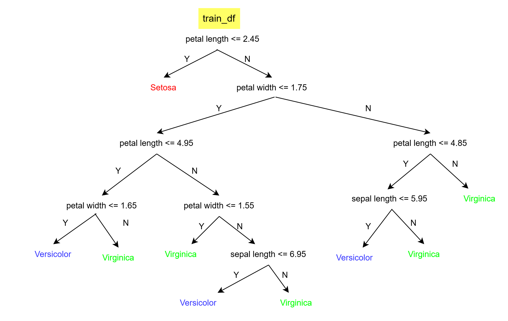
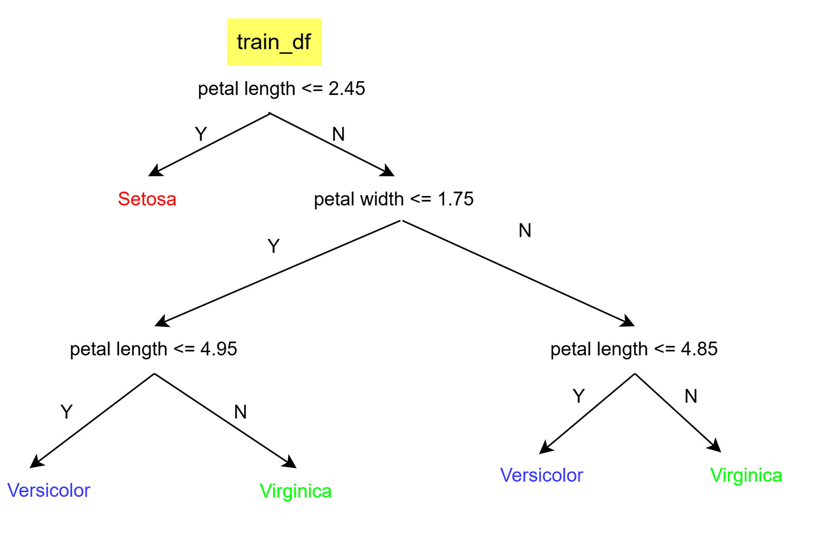

# Import necessary libraries
import numpy as np
import pandas as pd
import matplotlib.pyplot as plt
from sklearn.datasets import load_iris
from pprint import pprintIn this notebook, we will be building a basic decision tree to learn and familiarize ourselves with various governing foundational concepts about decision trees. For this, we will use a relatively simple dataframe containing purely numerical features for the task of classification. As our understanding about decision trees expands, we will extend the concepts learned here to handle complex and challenging dataframes (such as those with missing values, with categorical features, etc.)
Let’s load the popular iris data. (We are using sklearn only and only to load a popular benchmark dataset. We will not use it to build decision trees. Instead, we will build our decision trees entirely from scratch in using numpy)
# load the data
iris_data = load_iris()
X = iris_data.data
y = iris_data.target
# Here X and y are numpy arrays. We do a bit of processing to convert X and y into pandas dataframe for readability
feature_names = iris_data.feature_names
target_names = iris_data.target_names
df = pd.DataFrame(X, columns=feature_names) # start df with features i.e. X
df['target'] = y # add target column to df i.e. y
df['target'] = df['target'].apply(lambda x: target_names[x]) # Optional: convert integer labels to actual class names
df.head()| sepal length (cm) | sepal width (cm) | petal length (cm) | petal width (cm) | target | |
|---|---|---|---|---|---|
| 0 | 5.1 | 3.5 | 1.4 | 0.2 | setosa |
| 1 | 4.9 | 3.0 | 1.4 | 0.2 | setosa |
| 2 | 4.7 | 3.2 | 1.3 | 0.2 | setosa |
| 3 | 4.6 | 3.1 | 1.5 | 0.2 | setosa |
| 4 | 5.0 | 3.6 | 1.4 | 0.2 | setosa |
Now, we will build a decision tree which when given 4 numerical feature values will classify the plant species as one of 'setosa', 'versicolor', 'virginica'.
For this, we first need to split the data into train and val sets. Then we will use the train set to build the model and test it on the val set.
def train_test_split_df(df, test_size=0.2, random_state=42):
""" splits the data into train and test sets"""
if isinstance(test_size, float) and test_size<1:
test_size = int(len(df)*test_size)
elif isinstance(test_size, int):
pass
else:
raise ValueError("test size must be a float/ int")
shuffled_indices = np.random.permutation(len(df))
test_indices = shuffled_indices[:test_size]
test_df = df.iloc[test_indices]
train_df = df.drop(test_indices)
return train_df, test_dftrain_df, test_df = train_test_split_df(df, test_size=20, random_state=0)
print(f'Train size: {len(train_df)}, Test size: {len(test_df)}')
train_df.head()Train size: 130, Test size: 20| sepal length (cm) | sepal width (cm) | petal length (cm) | petal width (cm) | target | |
|---|---|---|---|---|---|
| 1 | 4.9 | 3.0 | 1.4 | 0.2 | setosa |
| 2 | 4.7 | 3.2 | 1.3 | 0.2 | setosa |
| 3 | 4.6 | 3.1 | 1.5 | 0.2 | setosa |
| 4 | 5.0 | 3.6 | 1.4 | 0.2 | setosa |
| 5 | 5.4 | 3.9 | 1.7 | 0.4 | setosa |
To build a decision tree, the dataset is split into 2 subsets using a condition - where one subset satisfies the condition and another does not.
The condition is nothing but thresholding of one the features. (For example, condition: sepal lenghth <= 4.4 cms will split the dataset into 2 subsets - one where sepal lenghth is less than 4.4 cms and another where it is not)
The main question here is how we decide which feature to use and what threshold to pick?
Answer: Pick the feature which results in most information gain.
Now to understand the above term information gain, we need to first familiarize ourselves with few more concepts.
Purity- Measure of homogenity of a subset. For ex: if a data subset contains only red balls - it is pure. But if it contains even a single green ball - it is now impure. The extent of impurity is measured usingentropy.Entropy- calculated as:H(X) = — Σ (pi * log2 pi)
where; X = Total number of samples, and, pi is the probability of class i
Pure dataset: - One which contains elements belonging to single class. For e.g.: All red balls - For a pure dataset: entropy = 0
Most Impure dataset: - One which contains elements distributed equally among other classes. For e.g.: 10 blue balls and 10 red balls - For the most impure subset: entropy = 1
Information Gain- If we split the dataset, then the entropy (i.e. degree of impurity) in the children subsets should ideally be lower. This reduction in entropy is the information gain.Information Gain = entropy (parent) — [average entropy of ( children)]
Now, based on the above concepts, we will split the dataset, using the feature that results in highest information gain.
And how we do this?
Answer: Brute Force. Yes, Brute Force… We go through all the feature columns one at a time and for each feature column, we go through all of their possible values one at a time, splitting the data into 2 children nodes, calculating information gain, storing it and then pick one which gave us the highest information gain.
We repeat this process, either a fixed number of times or until the entropy of children becomes zero (i.e. children subsets become pure) and then we stop.
Let’s see this step by step…
# let's check the purity of our current data
def check_purity(df: pd.DataFrame) -> bool:
"""
Check if data is pure.
"""
y = df.iloc[:, -1]
return len(y.unique())==1
print('Is the train data pure? ->', check_purity(train_df))Is the train data pure? -> FalseAs it is not pure. Let’s see how much impure it is by calculating entropy.
def calculate_entropy(df: pd.DataFrame) -> float:
"""
Calculates the entropy of the data. Entropy = — Σ (pi * log2 pi)
"""
y = df.iloc[:, -1]
values, counts = np.unique(y, return_counts=True)
probs = counts/len(y)
entropy = -np.sum(probs*np.log2(probs))
return entropy
parent_entropy = calculate_entropy(train_df)
print(f"Entropy of parent node: {parent_entropy}")Entropy of parent node: 1.5848773505329046Now, let’s see the details of how we will split the data. The code below should be very straightforward and intuitive to understand.
As mentioned, now (1) we will go through all features and their all possible values to split the dataset and then (2)check the information gain. SO, let’s first create the function called get_potential_splits that does (1) for us and then we will implement determine_best_split that will do (2) for us.
# Function (1)
def get_potential_splits(df: pd.DataFrame) -> dict:
"""
Get all the possible potential splits of the data.
"""
potential_splits = {}
_, n_columns = df.shape
for column_index in range(n_columns - 1): # -1 to skip the target column
values = df.iloc[:, column_index]
unique_values = np.unique(values)
potential_splits[column_index] = [] # initialize a list for storing possible split values per column aka feature
# using mid-points between 2 consecutive unique values to split the data
for i in range(len(unique_values)-1):
split_value = (unique_values[i]+unique_values[i+1])/2
potential_splits[column_index].append(split_value)
return potential_splits
# let's see the potential splits for our data
potential_splits = get_potential_splits(train_df)
print("Potential splits for each feature column:")
print(potential_splits)Potential splits for each feature column:
{0: [4.35, 4.45, 4.55, 4.65, 4.75, 4.85, 4.95, 5.05, 5.15, 5.25, 5.35, 5.45, 5.55, 5.65, 5.75, 5.85, 5.95, 6.05, 6.15, 6.25, 6.35, 6.45, 6.55, 6.65, 6.75, 6.85, 7.0, 7.15, 7.25, 7.35, 7.5, 7.65], 1: [2.1, 2.25, 2.3499999999999996, 2.45, 2.55, 2.6500000000000004, 2.75, 2.8499999999999996, 2.95, 3.05, 3.1500000000000004, 3.25, 3.3499999999999996, 3.45, 3.55, 3.6500000000000004, 3.75, 3.8499999999999996, 4.0, 4.15], 2: [1.05, 1.2000000000000002, 1.35, 1.45, 1.55, 1.65, 1.7999999999999998, 2.45, 3.15, 3.4, 3.55, 3.6500000000000004, 3.75, 3.8499999999999996, 3.95, 4.05, 4.15, 4.25, 4.35, 4.45, 4.55, 4.65, 4.75, 4.85, 4.95, 5.05, 5.15, 5.25, 5.35, 5.45, 5.55, 5.65, 5.75, 5.85, 5.95, 6.05, 6.199999999999999, 6.449999999999999, 6.65, 6.800000000000001], 3: [0.15000000000000002, 0.25, 0.35, 0.45, 0.55, 0.8, 1.05, 1.15, 1.25, 1.35, 1.45, 1.55, 1.65, 1.75, 1.85, 1.95, 2.05, 2.1500000000000004, 2.25, 2.3499999999999996, 2.45]}0: above is first column i.e. sepal length (cms), 1: is second column and so on.
Now, we have find all the possible ways to split the data (mentioned as (1))
Now, let’s see how to get the best split by developing determine_best_split (mentioned as (2)). For this, first create a function (2-1) that will split the data into 2 parts given a feature and its value. Then, we will use this function to split the data for all possible combinations, calculate information gain and pick the one that gives highest information gain (2-2).
# Function (2-1)
def split_data(df: pd.DataFrame, split_column: int, split_value: float) -> tuple[pd.DataFrame, pd.DataFrame]:
"""
SPlit the data into 2 subsets based on split column and split value.
split_column (int) : column index
"""
split_column_values = df.iloc[:, split_column]
left_split = df[split_column_values <= split_value]
right_split = df[split_column_values > split_value]
return left_split, right_split
# Functions (2-2)
def determine_best_split(df: pd.DataFrame, potential_splits: dict) -> tuple[int, float]:
"""
Determine the best split column and its value.
"""
best_split_column = None
best_split_value = None
best_info_gain = 0
parent_entropy = calculate_entropy(df) # Parent Entropy
# (Recursive)Iterate over all possible combinations of columns and their split values
for column_index in potential_splits.keys():
for split_value in potential_splits[column_index]:
left_split, right_split = split_data(df, column_index, split_value)
average_children_entropy = calculate_average_children_entropy(left_split, right_split)
information_gain = parent_entropy - average_children_entropy
# print("Column:", iris_data.feature_names[column_index], "Split value:", split_value, "Information gain:", information_gain)
# pick the one with highest information gain
if information_gain > best_info_gain:
best_info_gain = information_gain
best_split_column = column_index
best_split_value = split_value
#print("Best Information Gain:", best_info_gain)
return best_split_column, best_split_value
def calculate_average_children_entropy(left_split: pd.DataFrame, right_split: pd.DataFrame) -> float:
"""
Calculates the overall entropy of the data after splitting i.e. average entropy of the children nodes
overall entropy = weighted average of children entropies = Σ (p_c * E(c))
"""
n = len(left_split) + len(right_split) # total size of data
w_left = len(left_split)/ n # relative weight of left data
w_right = len(right_split)/ n # relative weight of right data
overall_entropy = w_left * calculate_entropy(left_split) + w_right * calculate_entropy(right_split)
return overall_entropyAbove 2 functions should be straightforward to understand. Only new concept is: to get entropy of data after split - we calculate it as average weighted entropy of children nodes.
(uncomment the print the statement in determine_best_split, if interested to see information gain for all possible splits)
best_split_column, best_split_value = determine_best_split(train_df, potential_splits)
print("Best split column:", iris_data.feature_names[best_split_column], "with value:", best_split_value)Best split column: petal length (cm) with value: 2.45Note: The result one gets could be different if the seed/ random_state in train_val_split_df is changed (because it will change the underlying training data i.e. train_df)
The result I got: Best split column: petal length (cm) with value: 2.45
Now, let’s create the splits
left_branch = train_df[train_df.iloc[:, best_split_column] <= best_split_value] # branch that satisfies the condition: petal length (cm) <= 2.45
right_branch = train_df[train_df.iloc[:, best_split_column] > best_split_value]
# # or, we could also do
# left_branch, right_branch = split_data(train_df, best_split_column, best_split_value)Let’s verify that after splitting the data has less impurity that is it has less entropy.
(How do we do that? - By calculating weighted average entropy of children nodes)
print(f"Before splitting, Entropy: {parent_entropy}")
print(f"After splitting, Entropy: {calculate_average_children_entropy(left_branch, right_branch)}")Before splitting, Entropy: 1.5848773505329046
After splitting, Entropy: 0.6691669882046775So, this verifies that our splitting was good.
Let’s see if either of the child node (i.e. data split) is pure
check_purity(left_branch), check_purity(right_branch)(True, False)Wow! our left_branch is pure i.e. it contains all the datapoints that has single class. Thus, it would not need any further splitting.
Whereas right_brach is not pure i.e. it contains datapoints from multiple classes. Thus, it would need further splitting.
np.unique(left_branch.target) # see classes in left_brancharray(['setosa'], dtype=object)np.unique(right_branch.target, return_counts=True) # see classes in right_branch(array(['versicolor', 'virginica'], dtype=object),
array([43, 44], dtype=int64))Based on just one condition, we can create a small subtree as follows:
sub_tree = {"condition" : ["left_split_answer", "right_split_answer"]}
If we suppose if this small sub-tree is our final decision tree which we want to use for testing. So, if we were to classify one test_example as input, we will check it’s petal length, see if it is less than <= 2.45 cm, we will return setosa as the class, else, we will pick the class with higher relative probability in the right_branch as the predicted class.
# In plain english
sub_tree = { "petal length (cm) <= 2.45" : ["setosa", "versicolor"]} # right split is versicolor because it is dominant in right_branchAlmost Never, we create decision tree with only a single condition i.e. 2 child nodes. Usually a decision tree is composed of multiple sub-trees composing multiple conditons.
Programatically speaking, we repeat the process of splitting for both the left_branch and right_branch until we reach the stopping condition:
- child nodes become pure
- a fixed number of steps by setting hyperparameters like
max_depth,min_samples, etc.
Note: There should not be any doubt/confusion when I say that the condition for splitting a left_branch and right_branch belonging to same parent node could be completely different (because it depends upon the data distribution within the child node).
Let’s build a full-fledged decision tree programatically using concepts of dynamic programming.
Decision Tree code (for case 1. i.e keep splitting until child nodes become pure)N
(Note: FYI: Case 2. i.e. splitting fo a fixed number of steps is also covered later in this notebook.)
def decision_tree_algorithm(df: pd.DataFrame) -> dict:
data = df
# base case: If data is pure-> stop and return the class of the child node
if check_purity(data):
predicted_class = np.unique(data.iloc[:, -1])[0] # only 1 unique value
return predicted_class
# else: keep on splitting
# Recursive
else:
# for splitting: get_potential_splits -> determine_best_split -> split_data based on best_split_column and best_split_value
potential_splits = get_potential_splits(data)
best_split_column, best_split_value = determine_best_split(data, potential_splits)
left_branch, right_branch = split_data(data, best_split_column, best_split_value)
condition = "{} <= {}".format(list(df.columns)[best_split_column], best_split_value)
# create the sub-tree as a dictionary storing the condition as key and a list as the value. This list for a
# condition has either the `predicted_class` if the child node is pure or another condition that will further split the
# impure child node.
sub_tree = {condition: []}
# get the answer for the 2 child nodes we just created (Step-1) and append them to the sub-tree
# (Step-1): get answers
left_branch_answer = decision_tree_algorithm(left_branch)
right_branch_answer = decision_tree_algorithm(right_branch)
sub_tree[condition].append(left_branch_answer)
sub_tree[condition].append(right_branch_answer)
return sub_treemy_tree = decision_tree_algorithm(train_df)
pprint(my_tree){'petal length (cm) <= 2.45': ['setosa',
{'petal width (cm) <= 1.75': [{'petal length (cm) <= 4.95': [{'petal width (cm) <= 1.65': ['versicolor',
'virginica']},
{'petal width (cm) <= 1.55': ['virginica',
{'sepal length (cm) <= 6.95': ['versicolor',
'virginica']}]}]},
{'petal length (cm) <= 4.85': [{'sepal length (cm) <= 5.95': ['versicolor',
'virginica']},
'virginica']}]}]}Above is the decision tree which we created, which can be read as follows. (Do not pay attention to the code but to the print block)

Let’s writ some code to evaluate the decision tree we built.
def classify_example(example, tree):
question = list(tree.keys())[0]
feature_name, split_value = question.split(" <= ")
# ask question
if example[feature_name] <= float(split_value):
answer = tree[question][0]
else:
answer = tree[question][1]
# base case
if not isinstance(answer, dict): # if the answer is not a dictionary, then it is a leaf node
return answer
# recursive case
else:
residual_tree = answer
return classify_example(example, residual_tree)
def calculate_accuracy(df, tree):
df = df.copy()
# df["classification"] = df.apply(classify_example, axis=1, args=(tree,))
# df["classification_correct"] = df["classification"] == df["target"]
df.loc[:, "classification"] = df.apply(classify_example, axis=1, args=(tree,))
df.loc[:, "classification_correct"] = df["classification"] == df["target"]
accuracy = df["classification_correct"].mean()
return accuracySince, we created sub_trees in an uninhibited manner, it will result in perfect train accuracy.
calculate_accuracy(train_df, my_tree)1.0Let’s check the test accuracy
calculate_accuracy(test_df, my_tree)1.0Surprisingly! It also resulted in the perfect test accuracy
Control the depth and min_samples in a decision tree
In the above case, we got test accuracy of 100%. But usually this is not the case because datasets are more complex.
If we allow the decision tree to grow unhibited manner then it overfits where it is possible that every leaf node would only have one data point. This is not a good decision tree because then prediction from such a tree becomes highly sensitive to small fluctuations in the data.
Hence, now we modify our code to pre-prune the tree i.e. limit its growth using max_depth and min_samples as the hyperparamters
Decision Tree code (for case 2. i.e. splitting fo a fixed number of steps)
Before we write the actual code, we need a function to get the majority class label of the set if the subset is not pure but further splitting is not possible because stopping condition is reached.
def get_majority_class(df: pd.DataFrame) -> int:
"""
Classify the data.
"""
y = df.iloc[:, -1]
return y.mode()[0]def decision_tree_improved(df: pd.DataFrame, counter = 0, min_samples=2, max_depth=5) -> dict:
data = df
# base case: If data is pure or we hit max_depth or min_sample condition violates-> stop and return the class of the child node
if check_purity(data) or (len(data) < min_samples) or (counter == max_depth):
predicted_class = get_majority_class(data)
return predicted_class
# else: keep on splitting
# Recursive
else:
counter+=1
# for splitting: get_potential_splits -> determine_best_split -> split_data based on best_split_column and best_split_value
potential_splits = get_potential_splits(data)
best_split_column, best_split_value = determine_best_split(data, potential_splits)
left_branch, right_branch = split_data(data, best_split_column, best_split_value)
condition = "{} <= {}".format(list(data.columns)[best_split_column], best_split_value)
# create the sub-tree as a dictionary storing the condition as key and a list as the value. This list for a
# condition has either the `predicted_class` if the child node is pure or another condition that will further split the
# impure child node.
sub_tree = {condition: []}
# get the answer for the 2 child nodes we just created (Step-1) and append them to the sub-tree
# (Step-1): get answers
left_branch_answer = decision_tree_improved(left_branch, counter, min_samples, max_depth)
right_branch_answer = decision_tree_improved(right_branch, counter, min_samples, max_depth)
if left_branch_answer == right_branch_answer: # Example: Instead of {'petal length <= 2.5': ['setosa', 'setosa']} just return 'setosa'
sub_tree = left_branch_answer
else:
sub_tree[condition].append(left_branch_answer)
sub_tree[condition].append(right_branch_answer)
return sub_treemy_tree = decision_tree_improved(train_df, max_depth=3)
pprint(my_tree){'petal length (cm) <= 2.45': ['setosa',
{'petal width (cm) <= 1.75': [{'petal length (cm) <= 4.95': ['versicolor',
'virginica']},
{'petal length (cm) <= 4.85': ['versicolor',
'virginica']}]}]}
calculate_accuracy(test_df, my_tree) # test accuracy with pruned tree0.95